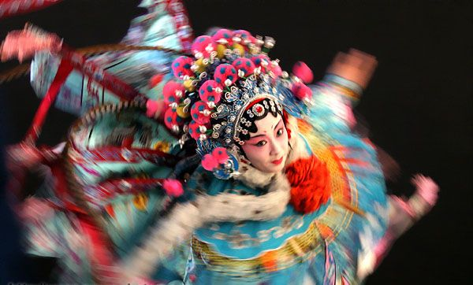

Peking Opera has a history of only about 200 years. There are other Chinese opera genres
that came into existence much earlier, like Kun Opera for example, that was developed already in the 14th
century. It is said that Peking Opera had its birth in 1790, when four opera troupes from the province of Anhui
came to Beijing to perform on the occasion of the 80th birthday
of the Emperor. Soon afterwards, some other theater companies from the region of Hubei fol- lowed. Over the
years, Peking Opera was formed through the combination of various music and performing techniques.

From the capital to the rest of China.
From 1860 on, numerous mobile companies spread Peking Opera all over China. By the end of the 19th century,
Peking Opera had become the most acclaimed opera form in China. Beijing was the center of the theater scene. The
Qianmen area in the south of the Forbidden City had developed into a flourishing commercial center packed with
theaters, tea houses and restaurants which hosted all kinds of artistic activities and where Peking Opera became
a part of daily culture. It became the home of a multitude of famous Peking Opera artists. New structures were
introduced for manag- ing theaters and Peking Opera companies.

Dan
The Dan refers to any female role in Peking op- era. Dan roles were originally divided into five subtypes.
Old women were played by laodan, martial women were wudan, young female war- riors were daomadan, virtuous
and elite women were qingyi, and vivacious and unmarried wom- en were huadan. A troupe will have a young Dan
to play main roles, as well as an older Dan for secondary parts.